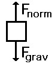
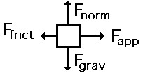

Drawing Free Body Diagrams
Free-body diagrams are diagrams used to show the relative magnitude and direction of all forces acting upon an object in a given situation. A free-body diagram is a special example of the vector diagrams. These diagrams will be used throughout our study of physics. The size of the arrow in a free-body diagram reflects the magnitude of the force. The direction of the arrow shows the direction that the force is acting. Each force arrow in the diagram is labeled to indicate the exact type of force. It is generally customary in a free-body diagram to represent the object by a box and to draw the force arrow from the center of the box outward in the direction that the force is acting. An example of a free-body diagram is shown in the image.
The free-body diagram above depicts four forces acting upon the object. Objects do not necessarily always have four forces acting upon them. There will be cases in which the number of forces depicted by a free-body diagram will be one, two, or three. There is no hard and fast rule about the number of forces that must be drawn in a free-body diagram. The only rule for drawing free-body diagrams is to depict all the forces that exist for that object in the given situation. Thus, to construct free-body diagrams, it is extremely important to know the various types of forces. If given a description of a physical situation, begin by using your understanding of the force types to identify which forces are present. Then determine the direction in which each force is acting. Finally, draw a box and add arrows for each existing force in the appropriate direction; label each force arrow according to its type. Here are some example situations and their associated free-body diagrams.
A book is at rest on a tabletop. A free-body diagram for this situation looks like this:
An egg is free-falling from a nest in a tree. Neglect air resistance. A free-body diagram for this situation looks like this:

A rightward force is applied to a book in order to move it across a desk with a rightward acceleration. Consider frictional forces. Neglect air resistance. A free-body diagram for this situation looks like this:
